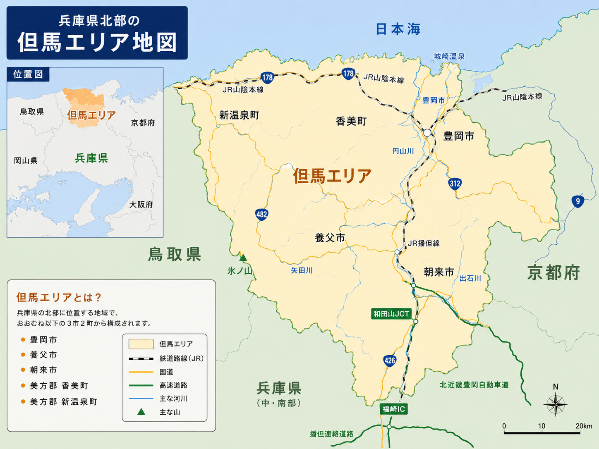

但馬の人・場所・体験に出会いながら、
地域に関わる人を増やしていく地域発信プロジェクト
但馬は兵庫の北部に位置し、日本海に面した自然豊かな地域です。海と山に囲まれたこの土地には、まだあまり知られていない人・場所・体験がたくさんあります。
たじまっちは、但馬の面白い人・場所・体験に出会いながら、地域に関わる人を増やしていく地域発信プロジェクトです。

但馬をもっと盛り上げたい
この地域で頑張る人や、まだ知られていない魅力を届けたい
そんな想いを持ったメンバーが中心となり、但馬を楽しみながら巡り、地域の魅力を発信しています。
但馬で挑戦を続ける人、面白い活動をしている人に会いに行く。一人ひとりの想いや背景に触れます。
まだあまり知られていない、但馬のとっておきの場所を訪ねる。海沿いの町から山あいの集落まで。
但馬でしか味わえない、五感で楽しむ体験に出会う。実際に歩き、味わい、感じることを大切に。
たじまっちは、但馬を楽しみながら巡り、地域の魅力を発信する仲間を増やしています。まずはSNSやnoteをのぞいてみてください。